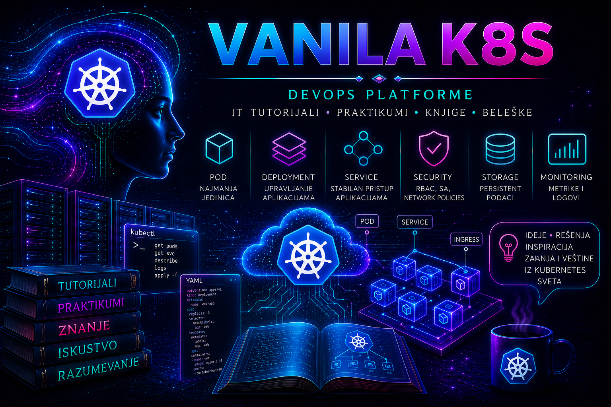

Vanilla Kubernetes

Savremene aplikacije sve ređe postoje kao jedan program na jednom serveru. One se sastoje od više servisa, kontejnera, mrežnih veza, trajnih podataka, konfiguracija, tajni i automatizovanih tokova isporuke. Takav sistem mora da ostane dostupan dok se menja, da reaguje na kvar, da raspoređuje opterećenje i da administratoru pruži dovoljno dokaza da razume njegovo stvarno stanje.
Kubernetes je nastao kao odgovor na potrebu da se veliki broj kontejnerizovanih aplikacija raspoređuje i održava na dosledan, deklarativan i automatizovan način. Umesto da administrator ručno upravlja svakim procesom, u Kubernetes API-ju opisuje se željeno stanje, a kontrolne petlje platforme neprekidno porede taj opis sa stvarnim stanjem i pokušavaju da otklone razliku.
Vanilla Kubernetes u ovoj knjizi označava upstream Kubernetes bez dodatnog vendorskog platformskog sloja. To ne znači da klaster postoji bez dodataka: za mrežu, storage, ulazni saobraćaj, metrike, politike, backup i mnoge druge sposobnosti potrebne su odgovarajuće implementacije. Znači da jasno razdvajamo jezgro projekta, standardne interfejse i API-je od odluka koje donose distribucija, cloud provajder, infrastrukturna platforma ili organizacija koja gradi i održava konkretno okruženje.
Upravo zato je poznavanje Vanilla Kubernetes-a prenosivo znanje. Kada razumemo šta rade API server, etcd, scheduler, controller manager, kubelet, CRI runtime, CNI i CSI, lakše prepoznajemo šta OpenShift, Tanzu ili managed Kubernetes servis dodaje, automatizuje, ograničava ili preuzima kao sopstvenu operativnu odgovornost.
Ova knjiga nije zamišljena kao spisak komandi. Njena osnovna namera jeste da izgradi administratorski i platformski način razmišljanja: pre promene utvrditi početno stanje, razumeti zavisnosti i rizik, predvideti rezultat i rollback; tokom rada sačuvati dokaze; posle promene potvrditi ne samo stanje objekta već i funkcionalnost servisa koji taj objekat podržava.
Kubernetes klaster nije jedan server niti jedan program. Control plane prima i proverava zahteve, čuva stanje, planira raspoređivanje i pokreće kontrolne petlje. Worker čvorovi izvršavaju Podove i povezuju ih sa mrežom, skladištem i lokalnim resursima. Između tih slojeva postoji stalna razmena informacija preko Kubernetes API-ja.
API server predstavlja centralnu ulaznu tačku za upravljanje stanjem klastera. Kubectl, kontroleri, operatori i automatizovani sistemi ne menjaju etcd neposredno, već šalju zahteve API serveru. Autentikacija, autorizacija i admission postupci određuju ko podnosi zahtev, da li je operacija dozvoljena i da li objekat ispunjava pravila platforme pre nego što bude prihvaćen i sačuvan.
Etcd čuva autoritativno stanje klastera, zbog čega njegovi quorum, konzistentnost, snapshot i restore postupci pripadaju najodgovornijim administratorskim temama. Scheduler bira odgovarajući čvor za Pod, controller manager održava deklarisano stanje, a kubelet na svakom čvoru obezbeđuje lokalno izvršavanje. Nijedna od ovih komponenti ne može se pravilno tumačiti izdvojeno od ostatka sistema.
Deklarativni manifest nije samo datoteka kojom se nešto kreira. On predstavlja opis namere koji može biti verzionisan, pregledan, poređen i ponovljen. Komande kao što su kubectl diff i kubectl apply, zajedno sa Git repozitorijumom, pregledom promene, evidencijom odobrenja i proverom rezultata, omogućavaju da se administracija pomeri od neponovljivih ručnih intervencija ka sledljivom upravljanju konfiguracijom.
Takav model menja način na koji se razmišlja o administraciji. Umesto pitanja „koju komandu treba izvršiti“, važnije postaje pitanje „koje željeno stanje treba opisati, koji kontroler će na njega reagovati, koje zavisnosti mogu biti pogođene i kojim dokazom ćemo potvrditi da je sistem dostigao očekivano stanje“. Upravo ta promena perspektive predstavlja jednu od najvažnijih osnova za odgovoran rad sa Kubernetes platformom.
Pod je najmanja izvršna jedinica Kubernetes modela, ali pouzdan rad aplikacije najčešće obezbeđuju kontroleri. Deployment i ReplicaSet održavaju replike i rollout stateless aplikacija; DaemonSet postavlja servise koji treba da postoje na odgovarajućim čvorovima; Job i CronJob upravljaju završivim i planiranim poslovima; StatefulSet povezuje stabilan identitet, redosled i trajne podatke.
Stabilnost workload-a ne zavisi samo od broja replika. ConfigMap i Secret razdvajaju konfiguraciju i poverljive podatke od slike kontejnera, probe određuju kada je aplikacija spremna za saobraćaj i kada je potrebno reagovati na neispravnost, dok requests, limits, QoS klase i scheduling pravila utiču na raspoređivanje i ponašanje workload-a pod opterećenjem.
Service i EndpointSlice odvajaju stabilan servisni identitet od promenljivih Podova. ClusterIP, NodePort i LoadBalancer rešavaju različite domete pristupa, dok CoreDNS omogućava otkrivanje servisa po imenima. Ingress i Gateway API uvode HTTP i HTTPS rutiranje, ali njihovo stvarno ponašanje zavisi od instaliranog kontrolera, njegove implementacije i infrastrukture koja obezbeđuje spoljašnju dostupnost.
Kubernetes mrežni model pretpostavlja komunikaciju između Podova, ali način na koji se ta komunikacija ostvaruje pripada CNI dodatku i infrastrukturi ispod klastera. Rutiranje, MTU, DNS, firewall, load balancer i NetworkPolicy moraju se analizirati kao jedna putanja. Mrežna politika pri tome ima praktičan efekat samo ako je izabrani CNI zaista sprovodi.
Zbog toga mrežni problem ne treba posmatrati samo iz perspektive jednog Kubernetes objekta. Simptom može nastati u aplikaciji, DNS rezoluciji, Service selektorima, EndpointSlice objektima, CNI implementaciji, host rutiranju, firewall pravilima, load balancer-u ili infrastrukturi izvan klastera. Pouzdana dijagnostika zahteva praćenje cele putanje.
Trajni podaci ne smeju zavisiti od životnog ciklusa Poda. PersistentVolume, PersistentVolumeClaim, StorageClass i CSI omogućavaju odvajanje zahteva aplikacije od konkretne storage implementacije. Stateful workload-i zato zahtevaju razumevanje ne samo Kubernetes objekata već i karakteristika infrastrukture na kojoj se podaci zaista čuvaju.
Snapshot nije sam po sebi strategija zaštite, a postojanje backup-a nije dokaz oporavljivosti dok restore nije izveden i validiran. Potrebno je znati šta se štiti, gde se rezervna kopija nalazi, od kojih drugih komponenti zavisi oporavak, koliko traje povratak usluge i da li su podaci posle restore postupka zaista konzistentni i upotrebljivi.
Bezbednost nije završna opcija koja se uključuje kada je klaster već izgrađen. Identiteti, sertifikati, OIDC, RBAC, ServiceAccount nalozi, SecurityContext, Pod Security Standards, admission politike, zaštita tajni i audit trag moraju biti deo dizajna. Princip najmanjih privilegija primenjuje se i na ljude i na workload-e.
Bezbednosna odluka takođe nije izolovana od operativnog rada. Preširoka privilegija povećava rizik, ali pogrešno ograničenje može prekinuti aplikaciju ili administrativni postupak. Zato se identitet, autorizacija, admission kontrola, runtime ograničenja, mrežna segmentacija i audit posmatraju zajedno, uz jasan dokaz o tome ko je mogao da izvrši promenu i kakav je bio njen rezultat.
Kubernetes može ponovo da pokrene Pod, održi broj replika i prerasporedi workload, ali sama automatizacija ne garantuje dostupnost poslovne usluge. Readiness, liveness i startup probe moraju odražavati stvarno ponašanje aplikacije; requests i limits moraju biti zasnovani na merenju; raspodela replika, PodDisruptionBudget i raspoloživi kapacitet klastera moraju biti međusobno usklađeni.
Horizontalno skaliranje takođe nije zamena za dobro projektovanu aplikaciju i dovoljan infrastrukturni kapacitet. HPA može povećavati ili smanjivati broj replika na osnovu dostupnih metrika, ali ne može rešiti ograničenje baze podataka, pogrešan readiness model, zagušenje mreže, nedovoljan broj čvorova ili problem sa storage slojem. Automatizacija mora biti povezana sa razumevanjem stvarnog uskog grla.
Monitoring, metrike, logovi, događaji i audit zapisi predstavljaju različite vrste dokaza. Njihova vrednost nastaje tek kada se povežu sa vremenom promene, simptomom, obimom uticaja i očekivanim ponašanjem sistema. Dobar alarm nije samo tehnički signal već pravovremeno upozorenje da je ugrožen SLI, SLO ili korisnička funkcija.
Observability zato nije samo instaliranje alata za prikupljanje metrika i logova. Njena svrha je da omogući zaključivanje o unutrašnjem stanju sistema na osnovu dostupnih signala. Administrator mora da zna koje pitanje pokušava da odgovori, koji dokaz mu je potreban i kako da poveže podatke iz aplikacije, Kubernetes objekata, čvora, mreže, storage-a i control plane-a.
Sistematičan troubleshooting počinje pitanjima: šta tačno ne radi, od kada, kome, na kom sloju i šta se neposredno pre toga promenilo. Tek zatim dolaze komande, logovi i korekcije. Nasumično menjanje resursa može ukloniti trag uzroka i proizvesti dodatni incident; zato se simptom, dokaz, hipoteza, intervencija i validacija moraju jasno razdvojiti.
Lifecycle klastera zahteva inventar komponenti, proveru kompatibilnosti, praćenje verzija i sertifikata, kontrolisan redosled nadogradnje i unapred definisane kriterijume za nastavak ili prekid promene. Etcd snapshot, zaštita PKI materijala i dokumentovan oporavak kontrolne ravni pripadaju istoj celini: sposobnosti da se klaster vrati u poznato i provereno stanje.
Upravljanje platformom prevazilazi tehničko postojanje objekata. Labels, annotations i inventar povezuju resurse sa vlasnikom, aplikacijom, okruženjem, kritičnošću i poslovnom uslugom. Admission politike i policy as code standardizuju pravila, dok GitOps daje izvor istine, sledljivost promena i odobrenja i mehanizam za otkrivanje konfiguracionog drifta.
Zrela Kubernetes platforma zato nije samo klaster koji trenutno radi. Ona ima poznate vlasnike, dokumentovane zavisnosti, kontrolisan pristup, proverljive promene, observability, backup i restore procedure, definisan lifecycle, evidenciju verzija i mogućnost da se incident rekonstruiše na osnovu sačuvanih dokaza.
Knjiga je organizovana u tri glavna dela i dvanaest tematskih poglavlja. Sadrži 50 numerisanih lekcija, pet završnih dodataka, uvod i zaključak. Redosled vodi od pojmovnih i arhitektonskih temelja, preko izgradnje pouzdane workload platforme, do produkcionih operacija, oporavka, upravljanja i integrisanih laboratorijskih scenarija.
Prvi deo – Temelji, arhitektura i izgradnja klastera obuhvata poglavlja od I do IV. U njemu razdvajamo upstream Kubernetes od distribucija i managed servisa, upoznajemo kontejnersko izvršavanje i granice ekosistema, biramo laboratorijski model, gradimo kubeadm klaster i pratimo tok odluke kroz control plane, worker čvor i etcd. Zatim prelazimo na Kubernetes API, kubectl, kubeconfig, dijagnostičke komande, YAML manifeste i osnovne workload kontrolere.
Cilj prvog dela nije samo da čitalac kreira Pod ili Deployment, već da izgradi jasnu mentalnu sliku: gde se željeno stanje predaje, gde se čuva, ko donosi odluku o raspoređivanju, ko izvršava workload i kojim dokazima se potvrđuje rezultat.
Drugi deo – Workload platforma, mreža, podaci i bezbednost obuhvata poglavlja od V do VIII. ConfigMap, Secret, probe, requests, limits, QoS i scheduling politike povezuju aplikativnu konfiguraciju sa zdravljem, kapacitetom i raspoređivanjem. Mrežni model, CNI, Service tipovi, CoreDNS, Ingress, Gateway API i NetworkPolicy grade putanju saobraćaja i njenu segmentaciju. Volume, PV, PVC, StorageClass, CSI, StatefulSet, snapshot, backup i restore uvode trajnost i oporavak podataka.
Bezbednosna poglavlja drugog dela povezuju korisničke i workload identitete sa autentikacijom, RBAC autorizacijom, ServiceAccount tokenima, SecurityContext podešavanjima, Pod Security Standards pravilima, admission kontrolom, zaštitom tajni i audit tragom. Bezbednost se tako ne posmatra kao izdvojena funkcija već kao osobina svakog sloja platforme.
Treći deo – Produkcione operacije, otpornost i enterprise integracije obuhvata poglavlja od IX do XI. Skaliranje, dostupnost, monitoring, alarmi, logovi i sistematičan troubleshooting pripremaju čitaoca za rad zasnovan na signalima i dokazima. Lifecycle, kompatibilnost, PKI, sertifikati, kubeadm nadogradnja i etcd disaster recovery uvode kontrolisanu promenu i povratak platforme.
Završne lekcije trećeg dela obrađuju inventar i CMDB, admission politike, policy as code, GitOps, upravljanje promenama, konfiguracioni drift i interoperabilnost sa OpenShift, Tanzu i cloud platformama. Njihov cilj nije brisanje razlika između proizvoda, već pouzdano prepoznavanje prenosivih Kubernetes principa i granica odgovornosti na svakoj platformi.
Laboratorijsko okruženje i integrisani projekti čine XII poglavlje i pet dodataka. Oni vode od projektovanja mreže, čvorova i kubeadm instalacije, preko izgradnje bezbednog i proverljivog okruženja i obuke novih članova tima, do kompletne DevOps laboratorije na VMware infrastrukturi. Završni game day povezuje kvar čvora, degradaciju servisa, oporavak, prikupljanje dokaza i retrospektivu.
Ovakav završetak ne proverava samo da li je komanda uspešno izvršena. On proverava da li čitalac ume da pripremi preduslove, proceni rizik, sačuva početno stanje, uvede promenu, validira funkcionalnost, izvede rollback ili oporavak i napiše dokumentaciju iz koje drugi član tima može da razume i ponovi postupak.
Materijal je namenjen čitaocima koji žele temeljno da upoznaju Kubernetes, čak i ako još nemaju profesionalno iskustvo u administraciji klastera. Pojmovi se uvode u kontekstu njihove svrhe, međusobnih zavisnosti i operativnih posledica, a praktični rad postepeno prelazi od pojedinačnih objekata ka povezanoj i odgovorno upravljanoj platformi.
Koristan je sistem administratorima koji prelaze sa fizičke ili virtuelne infrastrukture na kontejnere, DevOps i platformskim inženjerima koji žele čvršću osnovu ispod automatizovanih tokova, programerima koji žele da razumeju okruženje svojih aplikacija, kao i mrežnim, storage i bezbednosnim stručnjacima koji sarađuju na Kubernetes projektima.
Materijal može biti koristan i čitaocima koji već rade sa OpenShift, Tanzu ili managed Kubernetes platformama, ali žele jasnije da razumeju šta pripada samom Kubernetes projektu, šta obezbeđuju standardni interfejsi, a šta je dodatna sposobnost konkretne distribucije, infrastrukturne platforme ili cloud servisa.
Namenjen je i ljudima koji razmatraju ulazak u IT sektor. Kubernetes povezuje Linux, mreže, DNS, storage, bezbednost, automatizaciju, aplikativnu arhitekturu, monitoring i upravljanje promenama, pa kroz ovu oblast čitalac može realnije sagledati kakve probleme rešavaju sistem administracija, DevOps, platform engineering, SRE i cloud timovi.
Posebnu vrednost može imati za administratore u nedovoljno dokumentovanim okruženjima. Kada nisu jasni vlasnici, zavisnosti, verzije, politike ili postupci oporavka, sposobnost da se stanje prikupi, klasifikuje, dokaže i pretvori u održivu dokumentaciju postaje jednako važna kao tehničko upravljanje klasterom.
Za mene je ova knjiga istovremeno uređena mapa znanja koje povezuje infrastrukturu i aplikacije. Umesto da informacije ostanu rasute između zvanične dokumentacije, laboratorijskih beleški i iskustava iz različitih platformi, organizovane su redosledom koji omogućava učenje, obnavljanje, proveru i dalje produbljivanje.
Čitalac koji tek ulazi u ovu oblast trebalo bi da lekcije prati redom. Terminologija, arhitektura, alati i postupci grade se sloj po sloj, pa preskakanje zajedničkih temelja lako pretvara laboratoriju u niz komandi bez razumevanja. Teško je pravilno razumeti NetworkPolicy bez mrežnog modela i CNI-ja, StatefulSet bez Service-a i trajnog storage-a, GitOps bez deklarativnog upravljanja ili disaster recovery bez razumevanja etcd-a, PKI-ja i topologije kontrolne ravni.
Nije potrebno zapamtiti svaku komandu pri prvom čitanju. Važnije je razumeti odnose između komponenti i postupaka: manifest postaje API objekat, kontroler poredi željeno i stvarno stanje, scheduler bira čvor, kubelet obezbeđuje izvršavanje, Service pronalazi odgovarajuće backend-e, dok mrežni i storage dodaci ostvaruju funkcije koje Kubernetes definiše kroz odgovarajuće interfejse. Kada su ti odnosi jasni, pojedinačne komande postaju sredstvo za rad, a ne gradivo koje se mehanički pamti.
Svaku praktičnu vežbu treba izvoditi u kontrolisanom i bezbednom laboratorijskom okruženju. Pre promene potrebno je zabeležiti kontekst, namespace, verzije relevantnih komponenti, početno stanje, cilj, pretpostavke i očekivani rezultat. Treba unapred odrediti način validacije i mogućnost povratka, sačuvati izlaze relevantnih komandi i tek tada izvršiti promenu.
Posle izvršenja nije dovoljno utvrditi da komanda nije prijavila grešku. Potrebno je proveriti stvarno stanje sistema: API objekte, događaje, logove, mrežnu dostupnost, stanje čvorova i workload-a, trajnost podataka i ponašanje aplikacije. Promena se ne smatra uspešnom samo zato što je naredba završena bez greške, već tek kada postoje dokazi da je sistem dostigao očekivano stanje.
Posebno je korisno voditi sopstveni repozitorijum manifesta i operativnih beleški. Treba zapisivati pretpostavke, vreme događaja, početno stanje, izvršene promene, greške, relevantne izlaze komandi, dokaze, objašnjenje uzroka problema i rezultat korekcije. Beleške o neuspelim pokušajima često su vrednije od prepisanog idealnog postupka, jer pokazuju kako sistem reaguje kada neka pretpostavka nije tačna.
Dobar tehnički zapis treba da omogući da drugi član tima razume šta je urađeno, zbog čega je promena izvedena, kakvo je stanje postojalo pre nje, kako je rezultat proveren i na koji način bi postupak mogao da se ponovi ili vrati. Dokumentacija koja može da izdrži pregled drugog člana tima vrednija je od komande koju samo njen autor ume da ponovi.
Iskusniji čitaoci mogu koristiti knjigu kao mapu i referentni vodič. Mogu se neposredno vratiti na RBAC, probe, scheduling, mrežu, storage, audit, nadogradnje, etcd oporavak, GitOps, disaster recovery ili game day, a zatim pratiti unazad zavisnosti potrebne za potpuno razumevanje konkretnog problema.
Pri korišćenju knjige kao reference korisno je zadržati vezu između objekta koji se posmatra i sistema kojem pripada. Problem sa Podom može biti posledica aplikacije, schedulinga, resursa čvora, mreže, storage-a, identiteta ili politike; problem sa dostupnošću može biti posledica probe, servisa, DNS-a, kapaciteta ili spoljne infrastrukture. Cilj nije samo pronaći komandu koja uklanja simptom, već razumeti put kojim se dolazi do proverljivog uzroka.
Najvažnija ideja ove knjige jeste da Kubernetes nije samo skup YAML fajlova, kubectl komandi i objekata prikazanih u API-ju. Pouzdana platforma nastaje tek kada se povežu infrastruktura, Linux, kontejnersko izvršavanje, mreža, DNS, storage, identiteti, bezbednost, aplikacije, automatizacija, observability, backup, oporavak, dokumentacija i ljudi koji sistemom upravljaju.
Isto tako, poznavanje pojedinačnog Kubernetes objekta nije dovoljno bez razumevanja njegovih zavisnosti. Deployment zavisi od Pod šablona, schedulinga i resursa; Service od selektora i endpoint-a; NetworkPolicy od mrežnog modela i CNI implementacije; StatefulSet od identiteta i storage-a; GitOps od deklarativnog modela i pouzdanog izvora istine; disaster recovery od etcd-a, PKI-ja, podataka, infrastrukture i dokumentovanog redosleda oporavka.
Od osnovnih pojmova do završnog game day scenarija zadržana je ista namera: prvo razumeti sistem, zatim izvršiti promenu, prikupiti dokaze i najzad potvrditi da je rezultat zaista funkcionalan. Ako knjiga pomogne čitaocu da ne izvršava komande naslepo, da sigurnije postavlja hipoteze, razlikuje simptom od uzroka, dokumentuje odluke i razume granice između upstream Kubernetes-a i platformi koje se na njemu grade, onda je ispunila svoju svrhu.
Ovaj materijal predstavlja slobodan i sistematično organizovan obrazovni vodič kroz Vanilla Kubernetes, izgradnju klastera i odgovorno upravljanje workload platformom. Namenjen je učenju, povezivanju pojmova, laboratorijskom radu, razumevanju infrastrukturnih i aplikativnih zavisnosti i razvoju praktičnog administratorskog i platformskog načina razmišljanja.
Materijal nije zvanična dokumentacija Kubernetes projekta ili određenog proizvođača, nije program ovlašćene profesionalne obuke i nije zamena za rad pod nadzorom iskusnih stručnjaka. Njegovo čitanje samo po sebi nije garancija polaganja sertifikacionog ispita niti dovoljan osnov za samostalnu intervenciju u kritičnom produkcionom klasteru.
Kubernetes, njegovi dodaci, distribucije, podržane verzije, API-ji, integracije i preporučeni postupci menjaju se. Za profesionalnu primenu potrebno je proveravati aktuelnu upstream dokumentaciju, dokumentaciju izabrane distribucije i dodataka, verzijsku kompatibilnost, bezbednosne preporuke, politike podrške i procedure konkretne organizacije.
Primeri, manifesti, konfiguracije, skripte, komande i laboratorijske vežbe služe učenju. Pre produkcione primene potrebno je proceniti uticaj promene, potvrditi postojanje odgovarajućeg backup-a i mogućnost oporavka, razumeti mrežne, storage, bezbednosne, infrastrukturne i aplikativne zavisnosti, obezbediti potrebna odobrenja i pripremiti kontrolisan rollback.
Poseban oprez potreban je pri promenama RBAC pravila, admission politika, mrežnih politika, tajni, storage resursa, sertifikata, control plane komponenti, etcd-a i nadogradnji. Komande i postupci koji uključuju brisanje resursa, drain čvora, reset klastera, promene PKI materijala, restore ili druge destruktivne i teško reverzibilne operacije moraju se prvo proveriti nad tačno određenim ciljem u kontrolisanom laboratorijskom okruženju.
Za produkcionu primenu nije dovoljno da postupak tehnički može da se izvrši. Potrebno je znati ko je vlasnik sistema, ko odobrava promenu, kakav je očekivani uticaj, kojim signalima se prati stanje, gde se nalaze dokazi, kada se od promene odustaje i kako se usluga vraća u poznato i provereno stanje ako rezultat nije prihvatljiv.
Digitalna biblioteka TASHIZZA nastaje sa ciljem da složene stručne oblasti učini preglednim, sistematičnim i razumljivim bez pojednostavljivanja njihove suštine. Svaka knjiga predstavlja uređenu celinu koja povezuje teorijske osnove, praktične primere, laboratorijske vežbe, administrativne postupke i realne scenarije iz profesionalnog okruženja.
Cilj nije da se obuhvati svaka pojedinačna funkcionalnost određene tehnologije niti da se predstavi samo skup komandi ili koraka kroz grafički interfejs. Mnogo je važnije izgraditi stabilno razumevanje načina na koji sistemi funkcionišu, kako su međusobno povezani i zbog čega se određena rešenja primenjuju u stvarnim informacionim sistemima.
Poseban značaj pridaje se razumevanju celokupne infrastrukture. Serveri, operativni sistemi, mreže, storage sistemi, baze podataka, bezbednost, backup, monitoring, automatizacija, cloud platforme i DevOps alati posmatraju se kao međusobno povezani delovi jedinstvenog informacionog sistema, a ne kao izolovane tehnologije.
Pored tehničkog znanja, naglasak je stavljen na razvijanje infrastrukturnog načina razmišljanja. Svaka promena posmatra se kroz njene uzroke, posledice, zavisnosti, bezbednosne rizike, uticaj na druge sisteme i dugoročnu održivost. Takav pristup omogućava da se pojedinačne tehnologije povežu u jednu logičnu i funkcionalnu celinu.
Praktičan rad zauzima jednako važno mesto kao i teorija. Laboratorijska okruženja, praktični tutorijali, enterprise scenariji, mini projekti i završni integracioni projekti omogućavaju da stečeno znanje bude proverljivo, primenljivo i upotrebljivo u svakodnevnom radu.
Digitalna biblioteka nije zamišljena samo kao zbir pojedinačnih knjiga, već kao povezan sistem znanja. Oblasti poput Linux-a, VMware-a, Docker-a, Kubernetes-a, OpenShift-a, Oracle-a, automatizacije, programiranja, veštačke inteligencije i drugih tehnologija međusobno se dopunjuju i zajedno grade širu sliku savremene IT infrastrukture.
Posebna pažnja posvećena je sistematičnosti, jasnoći i dugoročnoj upotrebljivosti sadržaja. Svaka knjiga organizovana je tako da čitalac može postepeno napredovati od osnovnih pojmova, preko administracije i automatizacije, do realnih enterprise scenarija, bez potrebe da prethodno poseduje veliko praktično iskustvo.
Krajnji cilj digitalne biblioteke TASHIZZA jeste da predstavlja pouzdan, pregledan i dugoročno održiv izvor znanja koji pomaže razumevanju tehnologije, razvijanju profesionalnog načina razmišljanja i sigurnijem snalaženju u savremenim informacionim sistemima.
Ovaj tutorijal deo je slobodne digitalne biblioteke TASHIZZA. Osim kada je uz pojedinačni materijal izričito navedeno drugačije, autorski tekstovi, objašnjenja, knjige, tutorijali, praktikumi, beleške, originalne ilustracije, slike i drugi obrazovni sadržaji za koje je autorka nosilac odgovarajućih prava objavljeni su pod licencom Creative Commons Attribution 4.0 International – CC BY 4.0.
Licenca CC BY 4.0 omogućava čitanje, preuzimanje, kopiranje, deljenje, prevođenje, prilagođavanje, dopunjavanje i dalje objavljivanje sadržaja, uključujući njegovu komercijalnu upotrebu. Prilikom takvog korišćenja potrebno je na odgovarajući način navesti autorku i izvor, postaviti vezu ka licenci i jasno označiti da li je izvorni materijal menjan. Navođenje izvora ne sme stvarati utisak da autorka podržava novu verziju, njenog izdavača ili način na koji je sadržaj upotrebljen.
Kao osnovni podatak o izvornom delu navodi se: Nataša Mihajlović, TASHIZZA, https://tashizza.com. Puni uslovi licence dostupni su na stranici Creative Commons Attribution 4.0 International i u pratećem dokumentu LICENSE.
Osim kada je izričito navedeno drugačije, originalni primeri programskog i skriptnog koda, HTML struktura i šabloni, CSS, JavaScript, Bash skripte i drugi tehnički kod za koji je autorka nosilac odgovarajućih prava objavljeni su pod MIT licencom. MIT licenca dozvoljava korišćenje, kopiranje, menjanje, povezivanje, objavljivanje, distribuciju, podlicenciranje i prodaju kopija koda, pod uslovom da se u kopijama ili značajnim delovima koda sačuvaju obaveštenje o autorskim pravima i tekst MIT licence. Autorski i obrazovni tekst unutar HTML dokumenata ostaje obuhvaćen licencom CC BY 4.0.
Slobodno korišćenje sadržaja ne znači da su nazivi proizvoda, zaštitni znakovi, logotipi i tehnologije pomenuti u tutorijalu vlasništvo autorke ili sajta TASHIZZA. Nazivi Kubernetes, VMware proizvoda, Tanzu, OpenShift, Oracle i drugih pomenutih proizvoda, projekata i tehnologija pripadaju njihovim odgovarajućim nosiocima prava. U ovom tutorijalu koriste se isključivo radi identifikacije, stručnog objašnjenja, obrazovanja i informisanja i ne podrazumevaju povezanost, sponzorstvo, odobrenje ili podršku njihovih vlasnika.
Licence TASHIZZA primenjuju se samo na originalne materijale za koje je Nataša Mihajlović nosilac odgovarajućih prava. One ne menjaju uslove koji važe za citate, fotografije, ilustracije, zaštitne znakove, delove dokumentacije, delove koda i druge sadržaje trećih lica. Takvi materijali koriste se i dalje prenose u skladu sa pravima, licencama i pravilima njihovih odgovarajućih izvora.
Cilj otvorenog pristupa jeste da uređeno znanje ne ostane zatvoreno u ličnim beleškama. Čitalac je slobodan da uči, vraća se lekcijama, koristi ih kao osnovu za sopstveno istraživanje, razvija nove verzije i doprinosi daljem širenju znanja, uz poštovanje jednostavnih i jasno navedenih uslova odgovarajuće licence.